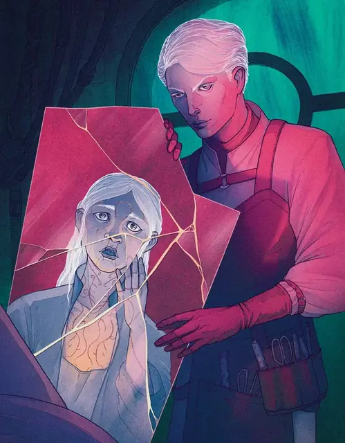

Виктра Морденхайм
Viktra Mordenheim
Средний Гуманоид (Человек), Принципиальный Злой, именной НИП

Класс Защиты 15 Инициатива +3 (13)
Хиты 123 (19к8 + 38)
Скорость 30 футов
| мод | спас | ||
|---|---|---|---|
| СИЛ | 11 | +0 | +0 |
| ЛОВ | 16 | +3 | +3 |
| ТЕЛ | 15 | +2 | +5 |
| мод | спас | ||
|---|---|---|---|
| ИНТ | 21 | +5 | +5 |
| МДР | 10 | +0 | +0 |
| ХАР | 10 | +0 | +3 |
Чувства пассивное Восприятие 10
Языки Общий, Гоблинский, Дварфийский, Драконий, Полуросликов, Эльфийский
Опасность 7 (2 900 опыта или 3 900 опыта в Домене; БВ +3)
Особенности
Восстановление Тёмной владычицы. Спустя 1к10 недель после смерти Виктра возрождается с полными Хитами где-то в Ламордии.
Легендарное сопротивление (3/день, или 4/день в Домене). Если Виктра проваливает спасбросок, она вместо этого может в нём преуспеть.
Поддержка изобретательницы. В конце каждого хода Виктры все союзные Конструкты в 5-футовой Эманации, исходящей от Виктры, получают 5 Временных хитов. Эта особенность не срабатывает, если Виктра Недееспособна.
Действия
Мультиатака. Виктра совершает две атаки Молниевым разрядником. Она может заменить одну из этих атак использованием Шприца.
Молниевый разрядник. Бросок рукопашной или дальнобойной атаки: +6, досягаемость 5 фт. или дальность 90 фт. Попадание: 12 (2к8 + 3) урона Электричеством, и цель не может совершать Реакции до начала своего следующего хода.
Шприц. Спасбросок Телосложения: Сл 16, одно видимое Виктрой существо в пределах 5 футов. Провал: Цель Отравлена на 1 минуту. Отравленная таким образом цель подвергается одному из нижеперечисленных эффектов (на выбор Виктры). Цель повторяет спасбросок в конце каждого своего хода, оканчивая этот эффект при успехе. Через 1 минуту цель преуспевает в спасброске автоматически.
Разъедающая сыворотка. Цель получает 10 (4к4) урона Кислотой в начале каждого своего хода, и её Скорость снижается на 10 футов.
Убийственная сыворотка. Цель получает 11 (2к10) Некротического урона в начале каждого своего хода и не может восстанавливать Хиты.
Психотропная сыворотка. Цель получает 10 (3к6) Психического урона в начале каждого своего хода и совершает с Помехой спаброски на поддержание Концентрации.
Бонусные действия
Активация конструктов (1/день). Виктра сотворяет Оживление вещей (заклинательная характеристика — Интеллект).
Реакции
Перенаправление атаки. Условие: Существо, которое видит Виктра, совершает по ней бросок атаки. Эффект: Владеска выбирает союзника Среднего или Маленького размера в пределах 5 футов от себя. Затем Владеска и этот союзник меняются местами, и союзник становится целью атаки.
Легендарные действия
У этого существа есть 3 использования Легендарных действий (или 4 использования в Домене); оно может немедленно после окончания хода другого существа потратить одно использование, чтобы совершить одно из следующих действий. Существо восполняет все потраченные использования в начале каждого своего хода.
Шоковый тычок. Виктра перемещается на расстояние вплоть до половины своей Скорости и совершает одну атаку Молниевым разрядником. Она не может совершить это действие снова до начала своего следующего хода.
Взрыв статики. Спасбросок Ловкости: Сл 16, все существа в 10-футовой Сфере с центром в точке, видимой Виктрой в пределах 90 футов. Провал: 5 (2к4) урона Электричеством, Успех: Только половина урона.
Бонус мастерства +3
Виктра Морденхайм
Тёмная владычица, что ищет совершенство
Из своей лаборатории в замке Морденхайм доктор Виктра Морденхайм своим научным гением творит и ужасы, и чудеса. Из стен лаборатории чередой выходят всевозможные виды нежити и конструктов, но такие несовершенные творения не приносят Морденхайм удовлетворения. Её цель — воссоздать или отыскать своё величайшее творение, Несокрушимое Сердце, чудодейственное устройство, даровавшее жизнь её ускользнувшей воскрешённой подопечной — Элизе.
История Виктры
С юных лет Виктра Морденхайм стремилась постичь сложности анатомии. Медицина привлекала её не помощью больным, а возможностью раскрыть тайны жизни. Постепенно её исследования обратились к оживлению мёртвой плоти и улучшению человеческих тел. Когда Виктра начала нанимать гробокопателей для добычи образцов, она повстречала Элизу — прекрасную похитительницу трупов, чья непосредственность пленила педантичную хирургиню. Виктра влюбилась, и вместе с Элизой ей открылось, что жизнь, быть может, состоит не из одних лишь химических реакций.
Когда у Элизы начали проявляться признаки неизлечимой болезни, Виктра ускорила свои эксперименты. На операционном столе начали оказываться живые люди; жертвы доктора умирали, возвращались к жизни и умирали вновь — Виктра лихорадочно искала прорыв. Когда Элиза всё же скончалась, Виктра отказалась смириться с неудачей. Исступлённо, лихорадочно она трудилась над своим шедевром — искусственным органом, который назвала Несокрушимым Сердцем. Но едва она успела вложить устройство в тело Элизы, в лабораторию ворвались констебли, обвинив доктора в массовых убийствах. Пока Виктра боролась, сопротивляясь аресту, лабораторию заполнили едкий дым, трещащие электрические разряды и странный туман.
Когда хаос улёгся, Виктра очнулась в Ламордии — незнакомой земле, где её гений восхищал умы. Элиза и Несокрушимое Сердце исчезли, но вскоре до доктора дошли слухи о чудно́м и пугающем создании, что бродит по ледяным просторам и чья грудь светится, словно солнце. С тех пор Виктра продолжает свои опыты, пытаясь воспроизвести былой успех, но раз за разом терпит неудачу. В промежутках между разочарованиями она ищет ту, кем стала Элиза, — и вместе с ней чудо Несокрушимого Сердца.
Домен Виктры
Ламордия, домен Виктры, изменяется из-за её присутствия, что создаёт следующие эффекты:
• Закрытие границ. Когда Виктра находится в домене, она способна по желанию закрывать или открывать границы Ламордии. Когда границы закрыты, в Туманах вокруг Ламордии бушуют грозы. Существо, впервые за ход входящее в Туманы или начинающее в них ход, должно совершить спасбросок Ловкости Сл 15. Оно получает 14 (4к6) урона Электричеством при провале и только половину урона при успехе. Существо совершает этот спасбросок только раз в ход.
• Атмосфера одержимости. Когда существо проваливает спасбросок Телосложения для поддержания Концентрации, оно получает 3 (1к6) Психического урона.
Если Виктра умирает, все эти эффекты мгновенно исчезают. Они возникают снова, если Виктра возрождается (см. Восстановление Тёмной владычицы).